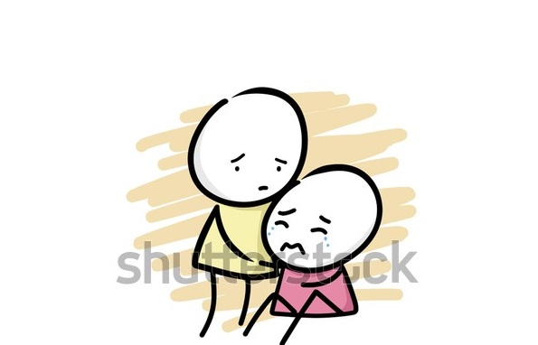
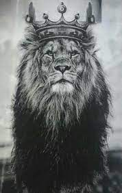
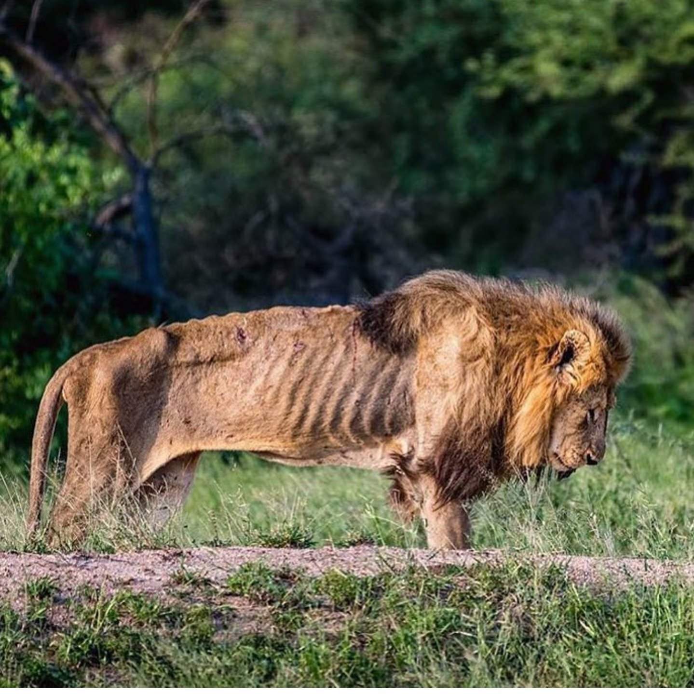

English Turkish لا تأسفن على غدر الزمان لطالما رقصت على جثث الأسود كلاب لا تحسبن برقصها تعلو على اسيادها تبقى الأسود أسوداً و الكلاب كلابا تموت الأسد في الغابات جوعاً و لحم الضأن تأكله الكلاب و ذو جهل ينام على حرير و ذو علم مفارشه التراب
Do not grieve over the vicissitudes of the time inasmuch as dogs dance above the corpses of lions Do not assume that dogs will rise above lions with their dance for lions stay as lions and dogs as dogs the lion dies in the forests in hunger and the meat of the jackel is what dogs will eat the ignorant may sleep on the silk the knowledgeable may sleep on the mattress of soil.
Aldanma zamanın gadrine... aslan cesedleri üstünde köpeklerler raks etse de sanma ki köpekler yücelecek aslanların üstünde bu raks edişleriyle aslan aslan kalır köpekler de köpek aslan ormanlarda aç ölür ama çakal etinden başka köpek ne yiyecek işte öyle de cahil de uyur ipekten döşekler üstünde alimin de döşeği topraktan bir sedirde
ta'safanna لا تأسفن 
ala ghadri al zamâni على غدر الزمان

la tâlamâ لطالما

raqasat ala josas al usûd(u) رقصت على جثث الأسود
كلاب kilab(u)

la tahsabanna لا تحسبن

b'raqsiha برقصها

ta'lu تعلو

ala asyâdiha على اسيادها 
tabqâ'l usûd(u) usûdan تبقى الأسود أسوداً

w'al kilâb(u) kilâbân و الكلاب كلابا

tamûtu'l asad(u) تموت الأسد

fi'l ghâbâti jaw'an في الغابات جوعاً 
wa lahm al-da'ni و لحم الضأن

ta'kuluhu'l kilâbu تأكله الكلاب

wa zû jahlin و ذو جهل

yanâmu ينام ala harîrin على حرير

wa zû 'ilmin و ذو علم

mafârishuhu al-turâbu مفارشه التراب